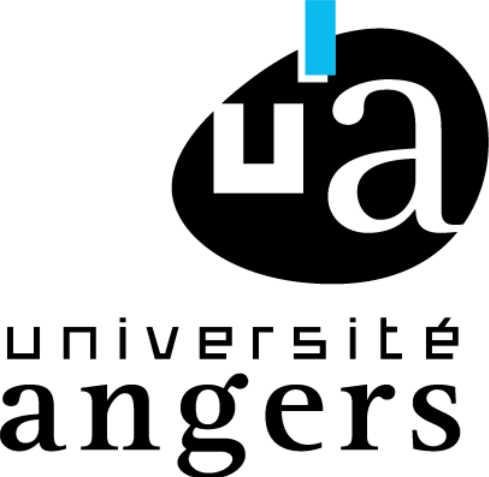

Ce projet a été réalisé par Masian Huneau et Sullivan Driant étudiant en première année de double licence mathématiques et informatique à l'université d'Angers
A deux
- Découverte de networkx
- Étude des solutions pour réaliser le projet
Masian
- Utiliser pysat pour résoudre d'une autre façon
- Faire en sorte que les graphes soient lisibles et avoir la fenêtre en plein écran
Sullivan
- Utiliser pycsp pour avoir une troisième façon de réaliser le projet
- Reprogrammation de l'algorithme DSATUR
